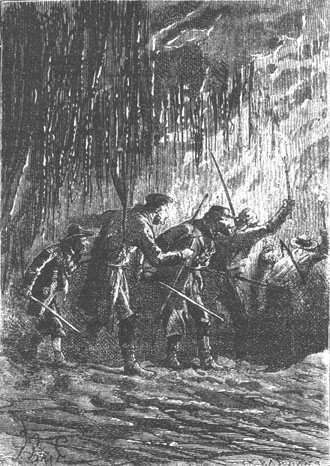
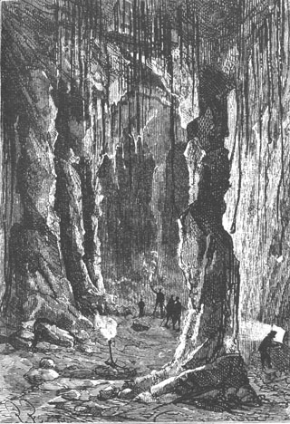

Cyrus Smith's project had succeeded; but following his custom he remained immobile, without showing any satisfaction, his lips tight, his gaze steady. Herbert was enthusiastic; Neb jumped for joy; Pencroff swayed his large head and murmured these words:
“Our engineer does well.”
In fact, the nitroglycerin had acted powerfully. The drain from the lake was so large that the volume of water which now escaped by this new passage was at least triple that which had formerly passed through the old way. The result was that in a short period of time after the operation, the level of the lake was lowered by at least two feet.
The colonists returned to the Chimneys in order to take picks, iron tipped spears, fiber cords, flint and tinder; they then returned to the plateau. Top accompanied them.
On the way, the sailor could not refrain from saying to the engineer:
“Do you know, Mister Cyrus, that by means of this charming liquid that you have made, we could blow up our entire island?”
“Without a doubt, the island, continents and the Earth itself,” replied Cyrus Smith. “It is only a question of quantity.”
“Can’t you then use this nitroglycerin to load any weapons?” asked the sailor.
“No, Pencroff, because it is too quick. But it will be easy to make cotton powder or even ordinary powder since we have nitric acid, saltpeter, sulphur and coal. Unhappily it is the weapons we do not have.”
“Oh, Mister Cyrus,” replied the sailor, “with a little determination...”
Decidedly, Pencroff had erased the word “impossible” from the Lincoln Island dictionary.
The colonists, on arriving at Grand View Plateau, immediately went to the point on the lake near the opening of the old overflow which was now uncovered. The passageway had become practical since the water no longer ran there and it would doubtless be easy to determine its interior arrangement.
In a few moments the colonists reached the lower corner of the lake and a quick glance sufficed to ascertain that the result had been achieved.
In fact, within the granite wall of the lake, and now above the level of the water, the long sought opening appeared. A narrow shoulder, left bare by the retreating water, allowed an entrance. This opening measured about twenty feet in length but only two feet in height. It was like the mouth of a sewer at the end of a pavement. This opening would not allow the colonists an easy passage; but Neb and Pencroff took the pick and in less than an hour they had given it a sufficient height.
The engineer then went near it and discovered that the walls of the passageway, in its upper part, did not show a slope of more than 30 to 35°. It was therefore practical and, provided the decline did not increase, it would be easy to descend to the level of the sea. If, as was very likely, some vast cavern existed inside this granite mass, they would perhaps find some way to use it.
“Well, Mister Cyrus, why are we stopping?” asked the sailor, impatient to venture into the narrow corridor. “You see that Top is already ahead of us.”
“Well,” replied the engineer, “we must see clearly. Neb, go and cut off some resinous branches.”
Neb and Herbert ran toward the banks of the lake, shaded by pines and other green trees, and they soon returned with branches that they formed into torches. These torches were kindled by sparks from the flint and, Cyrus Smith at the head, the colonists entered the dark passageway which had been filled with water not too long ago.
Contrary to what one would expect, the diameter of the passageway increased so that soon the explorers could stand up while descending. The granite walls, in contact with water for an immeasurable time, were slippery, so they had to guard against falls. The colonists were tied to one another by a cord as is done by mountain climbers. Happily, a few granite ledges, forming real steps, rendered the descent less perilous. Some drops, still suspended from the rocks, were iridescent under the flames of the torches, and it seemed that the walls were covered with innumerable stalactites. The engineer observed this black granite. He saw not a stratum, not a geological fault. The mass was compact and of an extremely close grain. This passageway dated from the very origin of the island. It was not the water which little by little had hollowed it. Pluto and not Neptune had bored it and on the wall they could distinguish traces of eruptive activity which the flow of water had not been able to erase completely.
The colonists descended only very slowly. They were not without a certain emotion in venturing thus into the depths of this mass which human beings were evidently visiting for the first time. They did not speak but reflected and the thought came to more than one of them that some octopus or other gigantic cephalopod could occupy these interior cavities which found communication with the sea. It was hence necessary to venture forth with a certain prudence.

The colonists descended slowly.
Besides, Top was at the head of this small troop and they could depend on the dog’s sagacity. He would not fail to give the alarm should it be required.
After having descended about a hundred feet, following a rather winding path, Cyrus Smith, who was ahead, stopped and his companions joined him. The spot where they had stopped was hollowed out, forming a cavern of moderate dimension. Drops of water fell from its arch but this did not prove any leak through the mass. It was simply the last traces left by the torrent which had roared so long through this cavity. The somewhat humid air did not emit any noxious emanation.
“Well, my dear Cyrus,” Gideon Spilett then said. “Here is an unknown retreat well hidden in these depths but, in sum, it is uninhabitable.”
“Why uninhabitable?” asked the sailor.
“Because it is too small and too dark.”
“Can we not enlarge it, hollow it out and make openings to let in daylight and air,” replied Pencroff, who no longer doubted anything.
“Let us continue,” replied Cyrus Smith. “Let us continue our exploration. Perhaps lower down nature will have saved us this work.”
“We are still only a third of the way down,” Herbert noted.
“About a third,” replied Cyrus Smith, “because we have descended about a hundred feet from the opening and it is not impossible that a hundred feet lower down...”
“Where is Top?...” asked Neb, interrupting his master.
They searched the cavern. The dog was not there.
“He probably continued along the path,” said Pencroff.
“Let us join him,” replied Cyrus Smith.
The descent was resumed. The engineer carefully observed the deviations of the passageway and, in spite of the detours, he could rather easily render an account of its general direction, which went toward the sea.
The colonists had gone down about another fifty feet, measured perpendicularly, when their attention was drawn to some remote sounds which came from the depths of the mass. They stopped and listened. These sounds, carried along the corridor like a voice across an acoustical tube, reached the ear clearly.
“It is Top’s barks!” cried Herbert.
“Yes,” replied Pencroff, “and our worthy dog barks furiously.”
“We have our iron tipped spears,” said Cyrus Smith. “Let us be on guard and advance.”
“This is getting to be more and more interesting,” murmured Gideon Spilett into the ear of the sailor, who made an affirmative sign.
Cyrus Smith and his companions ran to the dog’s assistance. Top’s barking became more and more perceptible. They sensed in his staccato voice a strange rage. Was he at grips with some animal whose retreat he had disturbed? One could say that the colonists were now possessed by an irresistible curiosity and not thinking of the danger to which they were exposed. They were not merely descending the corridor, they could say that they were gliding along its sides and in a few minutes, sixty feet lower down, they rejoined Top.
There the corridor materialized into a vast and magnificent cavern. There Top, coming and going, barked furiously. Pencroff and Neb, shaking their torches, threw light into every crevice of the granite while Cyrus Smith, Gideon Spilett, Herbert, spears in position, were ready for any eventuality.
The enormous cavern was empty. The colonists went through all of it. There was nothing there, not an animal, not a living being. Nevertheless, Top continued to bark. Neither caresses nor threats could silence him.
“There must be some outlet through which the lake’s water reaches the sea,” said the engineer.
“In fact,” replied Pencroff, “we should take care not to fall into a hole.”
“Go, Top, go!” shouted Cyrus Smith.
The dog, excited by his master’s words, ran toward the extremity of the cavern and there his barking redoubled.
They followed him and, by the light of the torches, the orifice of a real well appeared opening into the granite. It was here that the water left after having entered the granite mass but this time there was no longer an oblique and practical corridor but a perpendicular well into which it was impossible to venture.
The torches were inclined over the orifice. They saw nothing. Cyrus Smith detached a flaming branch and threw it into the abyss. The resinous fragment, burning brighter because of the rapidity of its fall, illuminated the inside of the well, but still nothing appeared. Then the flame extinguished with a slight simmer, indicating that it had reached the layer of water, that is to say, sea level.
The engineer, calculating the time of fall, was able to estimate the depth of the well, which he found to be about ninety feet.
The floor of the cavern was therefore situated at ninety feet above sea level.
“Here is our dwelling,” said Cyrus Smith.
“But it was occupied by some creature,” replied Gideon Spilett, who did not find his curiosity satisfied.
“Well, whatever this creature, amphibian or otherwise, it has fled by this opening,” replied the engineer, “and he has surrendered this place to us.”
“Never mind,” added the sailor. “I would like to be Top for a quarter of an hour because he does not bark without reason.”
Cyrus Smith looked at his dog and those of his companions who were near him would have heard him murmur these words:
“Yes, I really believe that Top knows a lot more about these things than we do.”
However, the needs of the colonists were in large part realized. Chance, aided by the marvelous sagacity of their chief, had happily served them. They had here at their disposal a vast cavern whose size they still could not estimate from the light of the insufficient torches, but it would certainly be easy to divide it into rooms, by means of brick partitions, and to adapt it, if not like a house, at least into a spacious apartment. The water had abandoned it and could not return. The place was vacant.
Two difficulties remained: first, the question of lighting this excavation hollowed out in a solid block; second the need for easier access. As to illumination, they could not dream of establishing it from above because of the enormous thickness of granite above them; but perhaps they could pierce the outer wall which faced the sea. Cyrus Smith who, during the descent, had measured the obliquity approximately, and consequently the length of the passageway, was led to believe that the outside wall could not be very thick. If illumination was obtained in this way, there would also be access, because it would be just as easy to make a door and an outside ladder as to make windows.
Cyrus Smith shared his ideas with his companions.
“To work then, Mister Cyrus,” replied Pencroff. “I have my pick and I will know how to bring daylight through this wall. Where should I strike?”
“Here,” replied the engineer, indicating to the vigorous sailor a rather considerable recess in the wall which would diminish the thickness.
Pencroff attacked the granite and for a half hour, by the light of the torches, he made the splinters fly around him. The rock sparkled under his pick. Neb relieved him, then Gideon Spilett after Neb.
The work had already lasted for two hours and they began to believe that the wall at this spot exceeded the length of the pick when, with a last blow given by Gideon Spilett, the instrument passed through the wall and fell outside.
“Hurrah! Forever and ever hurrah!” cried Pencroff.
The wall there measured only three feet in thickness.
Cyrus Smith placed his eye against the opening, which overlooked the ground from a height of eighty feet. The beach extended before him, the islet, and beyond that the immense sea.
This opening was rather large because the rock had disintegrated significantly. Light flooded in and produced a magical effect, inundating this splendid cavern. If, on its left side, it did not measure more than thirty feet in height and in width and a hundred feet in length, on its right side, in contrast, it was enormous and its dome was rounded at a height of more than eighty feet. In some places irregularly disposed granite pillars supported springers like those of the nave of a cathedral. Resting on sort of lateral columns, here overlayed with arches, there rising on ogival ribs, lost in obscure bays whose capricious arches they could barely see in the shadows, ornamented by a profusion of ledges which were formed like so many pendants, this vault offered a picturesque mixture of all the Byzantine, Roman and Gothic architecture produced by the hand of man. But this nevertheless, was only the work of nature. It alone had hollowed out this fairylike Alhambra into this massif of granite.

This dome was similar to a nave of a cathedral.
The colonists were stupefied with admiration. Where they had expected to find only a narrow cavity, they found a marvelous palace and Neb took off his hat as if he had been transported into a temple.
Cries of admiration were heard from all lips. Hurrahs resounded as echo upon echo were repeated and lost in the depths of the somber naves.
“Ah, my friends,” cried Cyrus Smith. “When we light up the interior of this massif, when we have arranged our rooms and our stores on the left side, this splendid cavern will still remain, which will be our study hall and our museum.”
“And we will call it?...” asked Herbert.
“Granite House,” replied Cyrus Smith, a name which his companions greeted with more of their hurrahs.
At this moment, the torches were nearly entirely consumed and since they must ascend the corridor in order to return to the summit of the plateau, it was decided to postpone for the next day the labors relating to the arrangements in the new dwelling.
Before leaving, Cyrus Smith leaned once more over the somber pit which was hollowed out perpendicularly down to the level of the sea. He listened carefully. There was no noise, not even from the water whose surging vibrations sometimes agitate these depths. A burning resin was once more thrown in. The walls of the pit were lit up for a moment but, like the first time, it revealed nothing suspicious. If some marine monster had been unexpectedly surprised by the retreat of the water, he had by now regained the open sea by means of the subterranean passageway that went under the beach, a path followed by the overflow from the lake before a new outlet was offered to it.
The engineer, however, remained immobile, listening carefully and looking into the gulf. He did not say a word.
The sailor then approached him and touched him.
“Mister Smith?” he said.
“What do you wish, my friend?” replied the engineer, as if returning from the land of dreams.
“The torches will soon be extinguished.”
“Let’s go,” replied Cyrus Smith.
The small troop left the cavern and began to climb up the somber passageway. Top was at the rear still making those singular growls. The climb was a rather steep one. The colonists stopped for several moments at the upper grotto which formed a sort of landing at the midpoint of this long granite stairway. Then they began to climb again.
Soon they felt fresher air. The drops, dried by evaporation, no longer scintillated on the walls. The light from the fading torches became smoky. The one carried by Neb was extinguished and, in order not to venture in profound darkness, they must hurry.
This was done and a little before four o’clock, just as the sailor’s torch was extinguished in its turn, Cyrus Smith and his companions emerged from the passageway.